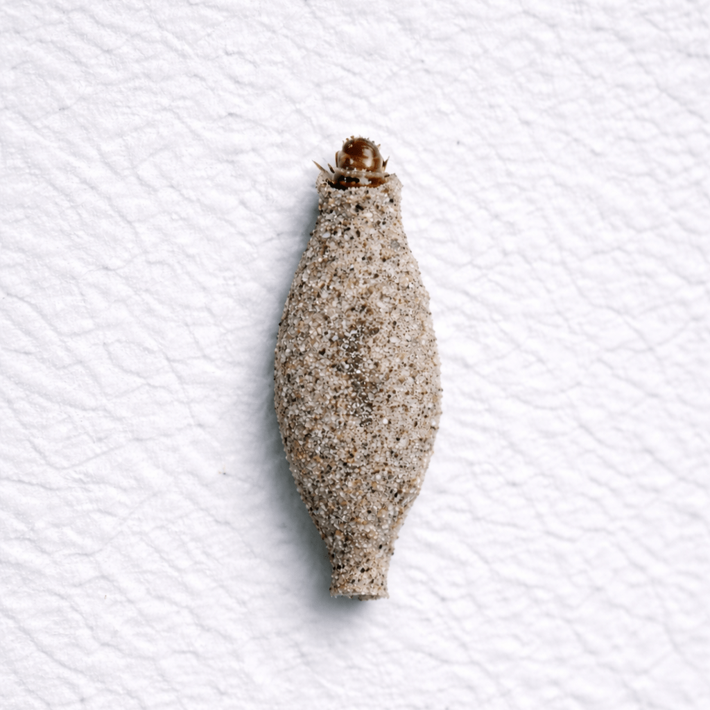

Polilla de estuche (Phereoeca uterella)

Descripción
La polilla de estuche (conocida también como plaster bagworm o “household casebearer”)
es una larva de polilla que vive dentro de un estuche (una “fundita” o “bolsita”)
hecha de seda, polvo, pelusa y fibras. Ese estuche se ve pegado a paredes, techos, esquinas,
gabinetes o áreas de almacenaje.
Señales comunes
- “Estuches” pequeños (tipo semillita/bolsita) pegados a paredes, techos o esquinas.
- Actividad en closets, cuartos poco usados, detrás de muebles o cerca de zócalos.
- En algunos casos, daño leve en telas naturales (ropa, alfombras, tapicería) si hay fuente de alimento.
¿Por qué aparecen?
- Humedad y poca ventilación (ambientes cálidos/húmedos favorecen varias plagas domésticas).
- Acumulación de pelusa, polvo, cabellos en esquinas y detrás de muebles.
- Presencia de telarañas y otros residuos orgánicos (sirven como alimento).
- Áreas poco limpiadas o con almacenamiento prolongado.
Riesgos y daños
- Molestia por presencia visible en paredes/techos.
- Posible daño en textiles (especialmente si hay fibras naturales y condiciones favorables).
- Indica que hay polvo/pelusa/humedad o refugios que conviene corregir.
Prevención
- Aspirar y limpiar esquinas, zócalos, closets y detrás de muebles con frecuencia.
- Reducir telarañas (limpieza y control de insectos que las atraen).
- Guardar ropa (especialmente la que se usa poco) en recipientes/bolsas cerradas.
- Mejorar ventilación y controlar humedad en áreas cerradas.
Control profesional
El control efectivo se basa en inspección y corrección de condiciones (humedad, polvo, refugios),
junto con tratamiento dirigido cuando se requiere.
En Bugs Or Us PR trabajamos con buenas prácticas y soluciones seguras,
priorizando siempre la seguridad de su familia, sus mascotas y el medio ambiente.
Servicio en: Bayamón, Corozal, Dorado, Manatí, Morovis, Naranjito, Toa Alta, Toa Baja, Vega Alta y Vega Baja.
Solicitar Servicio Profesional
← Volver al Inicio